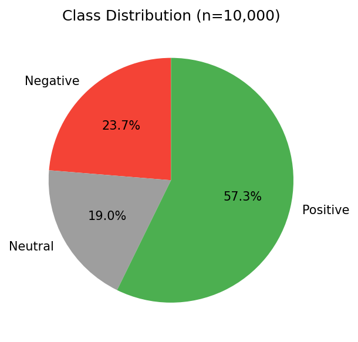

"We constructed a novel dataset by crawling 10,000 Vietnamese workplace reviews from 1900.com.vn — no pre-existing labeled corpus was available for this domain."
DAG runs daily at 02:00 AM — incremental crawl ensures fresh data
| Field | Description |
|---|---|
rating | 1–5 star score |
pros | Positive free-text |
cons | Negative free-text |
advice | Suggestions to management |
job_title | Reviewer's role |
employee_status | Current / Former |
company / industry |
Company metadata |
location / date |
Where & when |
